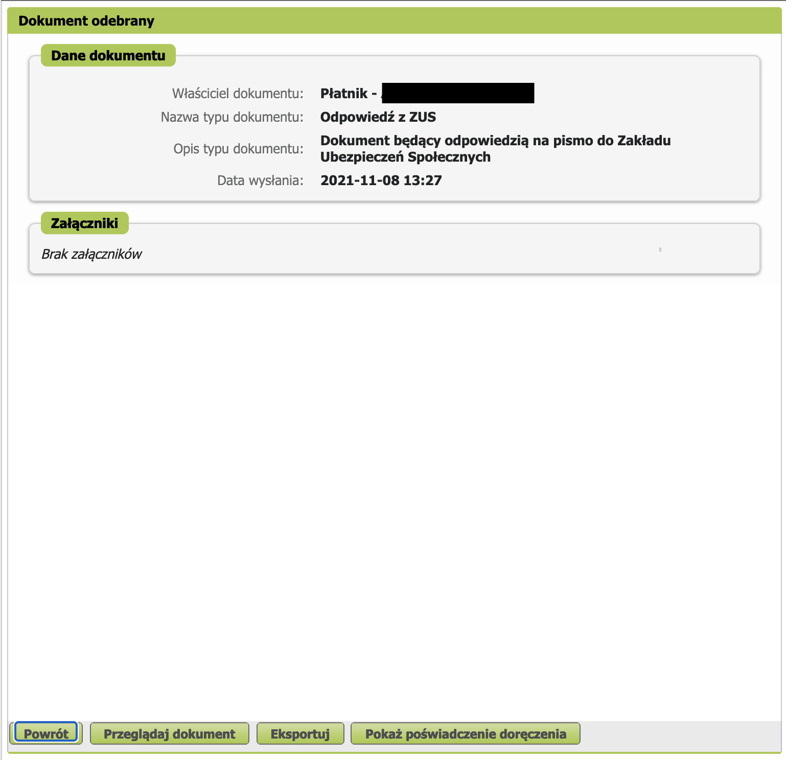

Zakład Ubezpieczeń Społecznych¶
Все предприниматели, ведущие JDG в Польше обязаны застраховаться в государственной службе социального страхования и оплачивать страховые взносы.
Размер взносов¶
ZUS состоит из 2 основных частей:
- Медицинское страхование (Składka zdrowotna)
- Социальное страхование, включает в себя
- Пенсионное страхование (Ubezpieczenie emerytalne)
- Страхование от потери трудоспособности (Ubezpieczenie rentowe)
- Страхование от несчастных случаев (Ubezpieczenie wypadkowe)
- Фонд труда и Фонд солидарности (Fundusz pracy i Fundusz Solidarnościowy)
- Страхование на случай болезни (Ubezpieczenie chorobowe)
Размер взносов по медицинскому страхованию в месяц рассчитывается по формуле базовая ставка * 9%.
Размер базовой ставки рассчитывается от дохода:
- Доход до 60 000 злотых: Базовая ставка вычисляется как 60% от средней заработной платы
- Доход от 60 000 злотых до 300 000 злотых: Базовая ставка вычисляется как 100% от средней заработной платы
- Доходы выше 300 000 злотых: Базовая ставка вычисляется как 180% процентов от средней зарплаты
В буквальных цифрах на 2024 год это:
- Доход до 60 000 злотых: 4.660,71 zł
- Доход от 60 000 злотых до 300 000 злотых: 7.767,85 zł
- Доходы выше 300 000 злотых: 13.982,13 zł
Далее, подставим в формулу числа и получим размеры взносов по медицинскому страхованию:
- 4.660,71 * 9% = 419,46 zł
- 7.767,85 * 9% = 699,11 zł
- 13.982,13 * 9% = 1258,39 zł
Важно отметить, что при превышении порога, пересчет идет и за прошлые месяцы.
Пример:
Максим облагается Ryczałt-налогом на зарегистрированный доход. В марте 2024 года доход Макса превысил 60 000 злотых, а в октябре - более 300 000 злотых. Как будет выглядеть ежегодный расчет взноса на здравоохранение?
В течение года Максим должен выплачивать взносы на медицинское обслуживание по следующей схеме:
- Январь - 419,46 zł,
- Февраль - 419,46 zł,
- Март - 699,11 zł (превышение порога в 60 000 zł),
- Апрель - 699,11 zł,
- Май - 699,11 zł,
- Июнь - 699,11 zł,
- Июль - 699,11 zł,
- Август- 699,11 zł,
- Сентябрь - 699,11 zł,
- Октябрь - 1258,39 zł (превышение порога в 300 000 zł),
- Ноябрь - 1258,39 zł,
- Декабрь - 1258,39 zł
В течение года Макс выплатил взносы на здравоохранение на общую сумму 9507,86 злотых: 419,46 * 2 + 699,11 * 7 + 1258,39 * 3.
Поскольку за календарный год Макс превысил порог в 300 000 злотых, он должен ежемесячно делать взносы за медицинское страхование
в размере 1258,39 злотых. Таким образом, годовой взнос составляет: 1258,39 * 12 = 15100,68, но сумма
взносов Максима из примера выше составила всего 9507,86 злотых. Это означает, что после завершения годового расчета у Максима
осталась недоплата взноса на медицинское обслуживание. Он обязан выплатить еще 5592,82 злотых: 15100,68 - 9507,86.
Таблица расчета взносов ZUS¶
|
Składki ZUS 2024 Ryczałt A + B + C + D |
Годовой доход | Ulga na start | Składki preferencyjne (c 01.01 до 31.06) | Składki preferencyjne (c 01.07 до 31.12) | Duży zus |
|---|---|---|---|---|---|
| A: Składka zdrowotna | 0 - 60 000 | 419,46 | |||
| 60 000.01 - 300 000 | 699,11 | ||||
| > 300 000 | 1258,39 | ||||
| B: ubezpieczenie społeczne | Emerytalna | 0 | 248,41 | 251,81 | 916,35 |
| Rentowa | 0 | 101,81 | 103,20 | 375,55 | |
| Wypadkowa | 0 | 21,25 | 21,54 | 78,40 | |
| Вместе | 0 | 371,47 | 376,55 | 1370,30 | |
| C: Fundusz Pracy | 0 | 0 | 0 | 115,01 | |
| Вместе (A + B + C): | 0 - 60 000 | 419,46 | 790,93 | 796,01 | 1904,77 |
| 60 000.01 - 300 000 | 699,11 | 1070,58 | 1075,66 | 2184,42 | |
| > 300 000 | 1258,39 | 1629,86 | 1634,94 | 2743,7 | |
|
D: Chorobowa (не обязательная) |
0 | 31,18 | 31,61 | 115,01 | |
Медицинскую часть (zdrowotna) нужно платить всегда, даже если параллельно есть еще страховка по трудовому договору. Медицинская складка даёт доступ к медицинскому обслуживанию для предпринимателя и членов его семьи.
От уплат социальной складки зависят социальные выплаты. В том числе — декретные, больничные, будущая пенсия, но эти выплаты пропорциональны сумме с которой вы оплачиваете взносы.
Первые 6 месяцев можно пользоваться льготой "Ulga na start" и не платить социальные складки. Соответственно, социальными выплатами тоже воспользоваться не получится. После истечения льготы на старт, можно перейти на следующую льготу — ZUS preferencyjne и пользоваться ею в течение 24 месяцев. После 30 месяцев деятельности начинается оплата полного ZUS (duży zus) — минимум 60% от средней заплаты.
Больше деталей на biznes.gov.pl и e-pity
Ulga na start¶
Для новых предпринимателей есть возможность получить льготу для оплаты ZUS на первые полгода и уменьшенный ZUS на следующие два года.
Для получения льготы нужно во время регистрации в ZUS указать в декларации ZUS ZZA код 05 40.
Регистрация¶
Предприниматель обязан в течение 7 дней после регистрации JDG зарегистрироваться в ZUS. Сделать это можно как во время регистрации деятельности, так и позже.
Как узнать свой счет для оплаты ZUS¶
После регистрации ИП через +-2 недели должно прийти письмо (физическое, конверт) из ZUS со всеми счетами и т.д. и функционал появится в кабинете, на сайте eskladka.pl.
А так же можно проверить счета на вышеупомянутом сайте, для этого необходимо ввести два идентификатора NIP и REGON (или NIP и PESEL).
Как платить ZUS¶
Оплачивать ZUS нужно до 20 числа следующего месяца за отчетным. Например, за июль зус оплачивается до 20 августа.
Оплату следует производить обычным переводом на индивидуальный счет ZUS. В назначении платежа можно писать что угодно, это ни на что не влияет.
Справка о незадолженности в ZUS¶
- Можно пойти физически в отделение ZUS (любое, не обязательно вашего района) и получить все справки с мокрыми печатями
-
Можно на портале ZUS
-
Переходим на сайт Katalog usług elektronicznych, в окно фильтра вписываем
RWN. -
Нас перекидывает в ZUS на форму заполнения
wniosek RWN. Проверяем данные в форме.
- Выбираем кол-во экземпляров справки и нажимаем Zapisz.

- Закрываем документ.
-
Соглашаемся.

-
Проверяем документ и нажимаем Wyślij.

- Подписываем через Profil Zaufany
- Нажимаем Ok

- Нажимаем Ok
-
Заходим в ZUS. В меню выбираем Płatnik. Слева в меню Dokumenty i wiadomości Korespondencja z ZUS. Выбираем документ и подтверждаем получение через Profil Zaufany.
-
После подтверждения появится пункт Szczegóły

-
Открываем документ Przeglądaj dokument.

-
Печатаем Drukuj.

Добавление ePUAP к профилю ZUS¶
-
Если у вас есть profil zaufany, перейдите к Panel ogólny -> Ustawienia -> Dane profilu и нажмите Dodaj powiązanie z ePUAP.

-
Вы будете перенаправлены на страницу входа в доверенный профиль, залогиньтесь и подпишите profilem zaufany.

-
в итоге профиль ZUS будет связан с profilem zaufanym.